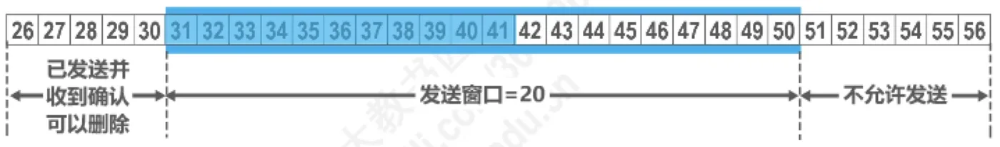
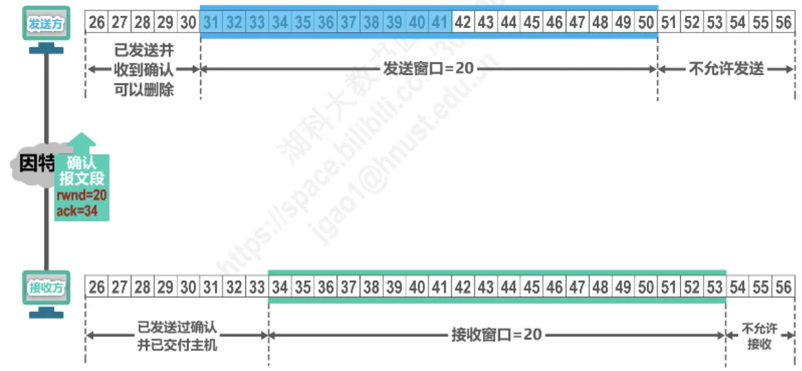
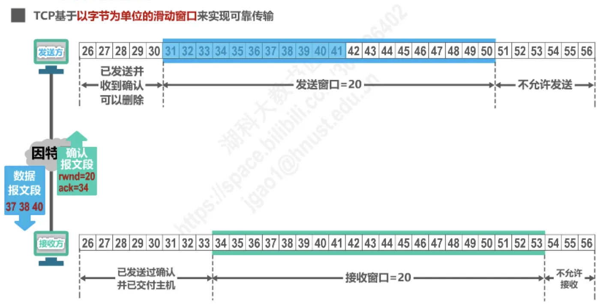
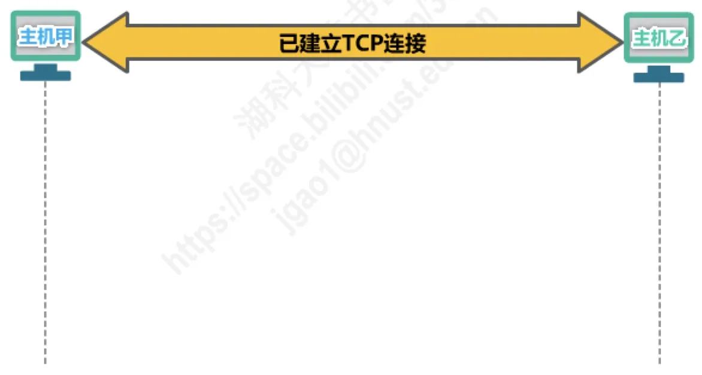
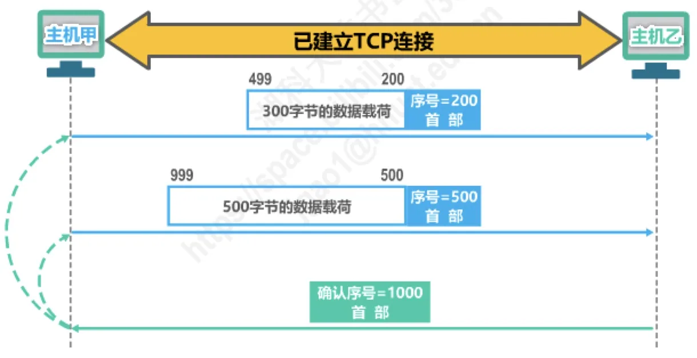
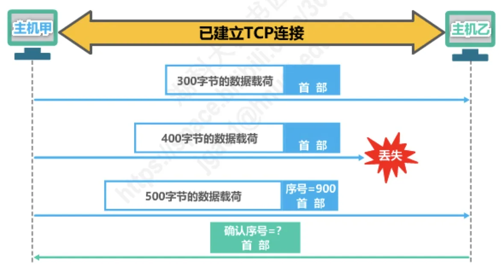

计算机通信与网络 · 第 5 章 运输层
5.7 TCP可靠传输的实现
前面几节分别讲了流量控制、拥塞控制和超时重传时间的计算，它们最终都要落到同一个载体上：以字节为单位的滑动窗口。本节就把这个载体讲透——发送窗口由哪几段字节组成、后沿和前沿如何移动、怎样用三个指针描述它的状态、接收方的接收窗口如何与之配合，最后补上累积确认、捎带确认、失序数据如何处理等几条容易被忽略的规矩，并用两道真题检验理解。
1. TCP 基于以字节为单位的滑动窗口实现可靠传输
TCP 的可靠传输靠滑动窗口来实现，而且这个窗口是以字节为单位的，不是以报文段为单位。这一点从图 1 的字节编号就能看出来：发送方把要发送的数据看成一串连续编号的字节（图中是 26 到 56），每个 TCP 报文段首部里的序号指的正是该报文段数据部分第一个字节的编号。
确认号 ack=31 的含义是「31 号以前的字节都已正确收到」，而 rwnd=20 的意思是「我还有 20 字节的接收空间」。两条信息合起来就唯一确定了发送方发送窗口的位置与长度。这也是 5.4 节流量控制在字节层面的具体体现。
2. 发送窗口的构成与前后沿的移动
发送方的发送窗口可以分成几段来看（图 2）：
- 窗口左侧（后沿之前）是已发送并且已收到确认的部分，这部分数据已经用不上了，可以删除；
- 窗口之内是尚需处理的数据：其中一部分已发送但还没收到确认，另一部分允许发送但当前尚未发送；
- 窗口右侧（前沿之后）是不允许发送的部分。

窗口既然是「滑动」的，就要看清两个边界的移动规律：
（1）后沿的移动有两种可能
- 不动——没有收到新的确认；
- 前移——收到了新的确认。
后沿只会向前，绝不会后退。原因很直观：已经被确认的数据不可能「变回未确认」，删除过的数据也不用重新保存。
（2）前沿的移动有三种可能
- 通常是不断向前移动——因为发送方陆续收到新的确认，对方也持续通告新的窗口；
- 不动——有两种情形：一是没有收到新的确认，对方通知的窗口大小也不变；二是收到了新的确认，但对方通知的窗口缩小了，两者作用相抵，使发送窗口前沿正好不动；
- 向后收缩——对方通知的窗口缩小了。
需要特别提醒：TCP 标准强烈不赞成发送窗口前沿向后收缩。因为发送方可能已经根据原来的窗口把数据发出去了，此时再收到「窗口缩小」的通知，就会陷入「发出去的数据落在窗口之外」的尴尬局面。实际实现中一般只做到「前沿不动」为止。
3. 用三个指针描述发送窗口的状态
要把窗口的状态说清楚，可以借用三个指针 P1、P2、P3，它们分别指向相应的字节序号（图 3）：
- 小于 P1 的是已发送并已收到确认的部分；
- P1 到 P2 之间是已发送但尚未收到确认的字节；
- P2 到 P3 之间是允许发送但当前尚未发送的字节，又称为可用窗口或有效窗口；
- 大于等于 P3 的是不允许发送的部分。
三个指针之间的距离也有确切含义：
P3 - P1 = 发送窗口的尺寸
P2 - P1 = 已发送但尚未收到确认的字节数
P3 - P2 = 允许发送但当前尚未发送的字节数用图 2 的状态代入就是：P1 = 31、P2 = 42、P3 = 51，所以发送窗口尺寸 = 51 − 31 = 20 字节，已发送未确认 = 42 − 31 = 11 字节（31～41），可用窗口 = 51 − 42 = 9 字节（42～50）。
4. 接收方的接收窗口
接收方也维护一个同样以字节为单位的接收窗口，图 2 的初始状态下它也是 20 字节。接收窗口内的字节同样可以分成几段：
- 窗口左侧是已发送过确认并已交付主机的部分；
- 窗口之内是尚在等待、或者已经收到但还未按序交付主机的字节；
- 窗口右侧是不允许接收的部分。
由此得到一条基本规则：接收方只接收序号落入接收窗口内的数据。落在窗口之外的报文段一律不予受理，也就不会产生确认——发送方自然要靠超时重传把它们再送一次。接收窗口的大小由接收方根据自己的缓存余量决定，并通过确认报文段中的 rwnd 字段通告给发送方。
5. 窗口滑动的具体过程
把发送窗口与接收窗口对照起来，就能看清一次完整的滑动（图 4、图 5）。
接收方正确收到了 31～33 号字节后，发回确认报文段：rwnd=20，ack=34。发送方收到这个确认，窗口后沿就从 31 前移到 34，于是发送窗口变成 34～53（仍是 20 字节）；相应地，接收窗口也前移到 34～53。注意这里体现的是累积确认：ack=34 一次就确认了 31、32、33 三个字节，不需要逐字节或逐报文段地确认。

窗口前移后，发送方在未收到接收方的确认时，可以将发送窗口内还未发送的数据全部发送出去，用满这段可用窗口。但网络并不总是听话，接下来会出现两种典型情况（图 5）：
- 报文段失序到达：例如 37～40 号字节先到了，而前面的字节尚未补齐。接收方对它不能按序交付，于是仍然发出确认号不变的重复确认（图中仍然是 rwnd=20、ack=34），等于告诉发送方「34 号开始的数据我还没收到」；
- 重传计时器超时：如果发送方迟迟等不到确认，重传计时器就会超时，此时发送方会重传发送窗口内已发送的数据，并重新启动重传计时器。

把这两条放在一起，正是 5.5 节快重传与 5.6 节超时重传在字节窗口层面的具体表现：重复确认是快重传的触发信号（收到 3 个连续重复确认即立即重传），而超时重传是最后的兜底手段。
6. 关于滑动窗口的几点重要说明
（1）发送窗口与接收窗口并不总是一样大
虽然发送方的发送窗口是根据接收方的接收窗口设置的，但在同一时刻，发送方的发送窗口并不总是和接收方的接收窗口一样大，原因有两条：
- 网络传送窗口值需要经历一定的时间滞后，并且这个时间还是不确定的；
- 发送方还可能根据网络当时的拥塞情况适当减小自己发送窗口的尺寸。
第二条正是 5.5 节的拥塞窗口在起作用：实际的发送窗口既要迁就接收方的接收窗口 rwnd，又要服从网络允许的拥塞窗口 cwnd，取两者的较小值。
（2）不按序到达的数据如何处理
对于不按序到达的数据应如何处理，TCP 并无明确规定，两种做法各有代价：
- 如果接收方把不按序到达的数据一律丢弃，那么接收窗口的管理将会比较简单，但这样做对网络资源的利用不利，因为发送方会重复传送较多的数据；
- TCP 通常对不按序到达的数据是先临时存放在接收窗口中，等到字节流中所缺少的字节收到后，再按序交付上层的应用进程。
（3）累积确认与捎带确认
TCP 要求接收方必须有累积确认和捎带确认机制，这样可以减小传输开销。接收方可以在合适的时候发送确认，也可以在自己有数据要发送时把确认信息顺便捎带上。但有两条限制：
- 接收方不应过分推迟发送确认，否则会导致发送方不必要的超时重传，这反而浪费了网络的资源。TCP 标准规定，确认推迟的时间不应超过 0.5 秒；若收到一连串具有最大长度的报文段，则必须每隔一个报文段就发送一个确认［RFC 1122］；
- 捎带确认实际上并不经常发生，因为大多数应用程序很少同时在两个方向上发送数据。
（4）窗口是「哪一方」的窗口
TCP 的通信是全双工通信，通信中的每一方都在发送和接收报文段。因此，每一方都有自己的发送窗口和接收窗口。在谈到这些窗口时，一定要弄清楚是哪一方的窗口——A 的接收窗口是限制 B 的，B 的接收窗口才是限制 A 的，两者不能混为一谈。
7. 原讲义中的两道真题
（1）2009 年题 38
【2009 年题 38】主机甲与主机乙之间已建立一个 TCP 连接，主机甲向主机乙发送了两个连续的 TCP 段，分别包含 300 字节和 500 字节的有效载荷，第一个段的序号为 200，主机乙正确接收到两个段后，发送给主机甲的确认序号是（ ）
A. 500 B. 700 C. 800 D. 1000
解析：序号指的是报文段数据部分第一个字节的编号，所以两个段覆盖的字节编号是：
- 第一个段：序号 200，有效载荷 300 字节，即 200～499 号字节；
- 第二个段：紧接着，序号为 500，有效载荷 500 字节，即 500～999 号字节。
主机乙正确接收了两个段，说明 200～999 号字节全部按序到达，累计确认应当指向「已收到的最后一个字节的下一个」，也就是 1000。所以答案是 D。


（2）2011 年题 40
【2011 年题 40】主机甲与主机乙之间已建立一个 TCP 连接，主机甲向主机乙发送了 3 个连续的 TCP 段，分别包含 300 字节、400 字节和 500 字节的有效载荷，第 3 个段的序号为 900。若主机乙仅正确接收到第 1 个和第 3 个段，则主机乙发送给主机甲的确认序号是（ ）
A. 300 B. 500 C. 1200 D. 1400
解析：先从第 3 个段反推出各段的字节编号。第 3 个段序号为 900、长度 500 字节，覆盖 900～1399；于是第 2 个段序号为 900 − 400 = 500，覆盖 500～899；第 1 个段序号为 500 − 300 = 200，覆盖 200～499。
确认序号反映的是「按序到达的最后一个字节的下一个编号」。主机乙收到了第 1 段（200～499），第 2 段（500～899）丢了，虽然第 3 段（900～1399）也收到了，但它失序，不能算作已按序接收。所以乙只能确认到 499 号字节，确认序号是 500。答案是 B。

两道题合起来正好说明了累积确认的两层含义：收到了哪些就确认到哪里的「连续前缀」，失序到达的数据再多也不算数。
本节小结
- TCP 基于以字节为单位的滑动窗口实现可靠传输：序号指字节编号，接收方通过确认报文段同时通告确认号 ack 与接收窗口 rwnd，两者共同确定发送窗口的位置与长度。
- 发送窗口左侧是已发送并已确认（可以删除）的部分，右侧是不允许发送的部分；后沿只有「不动」和「前移」两种可能，前沿有「不断前移」「不动」「向后收缩」三种可能，而标准不赞成前沿向后收缩。
- 用三个指针描述发送窗口：
P3 - P1是发送窗口尺寸，P2 - P1是已发送未确认的字节数，P3 - P2是可用窗口（允许发送但尚未发送）的字节数。 - 接收方只接收序号落入接收窗口内的数据；发送方在未收到确认时可以把发送窗口内还未发送的数据全部发送出去。
- 收到新确认时发送窗口与接收窗口一起前移；数据失序到达时接收方发送确认号不变的重复确认，重传计时器超时则发送方重传发送窗口内已发送的数据并重新启动重传计时器——这正是快重传（5.5 节）与超时重传（5.6 节）的作用点。
- 发送窗口并不总等于接收窗口：窗口值的传送有时间滞后且不确定，发送方还可能因网络拥塞而减小自己的发送窗口（与 5.5 节的拥塞窗口配合）。
- 不按序到达的数据 TCP 未作硬性规定，通常先临时存放在接收窗口中，等缺少的字节到达后再按序交付；TCP 要求具备累积确认与捎带确认机制，确认推迟不得超过 0.5 秒（RFC 1122），收到一连串最大长度报文段时必须每隔一个报文段发送一个确认。
- TCP 是全双工通信，每一方都有自己的发送窗口和接收窗口，谈窗口时必须先弄清是哪一方的窗口。